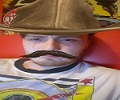

Here at Loftus Hall we have a team that specialises in the Supernatural. This team will be on hand to help assure you of your safety. Our highly trained and experienced team will help keep you safe from the evil spirits, ghouls and ghosts that possess the walls of this old house.
(Tsk! Hover on photos)
Lee Kearney
(Employee Id# 2903477)
Lee decided to get into ghost hunting and paranormal investigation after an unhealthy obsession with the Supernatural TV show. Having stayed awake for nights on end driven by a new found fear of supernatural beings and two new heroes, the Winchester Brothers, Lee decided to follow in the footsteps of his new heroes and help ward off the evil spirits of Loftus Hall. After watching every season at least twice he is considered somewhat of an expert on all things supernatural.
Jen Lebron
(Employee Id# 2894184)
After a brief stay at Sedgewick Hotel, Jen came in contact with a ghost made of pure ectoplasm. For days Jen found it strange that there was green goo trails left behind in her room and had even complained to the staff at the hotel. The staff claimed to know nothing about this green goo. As she went to pack her stuff and leave the hotel she spotted the green ghost known as Slimer eating food from the hotel. This ghost was chased by a team called Ghostbusters. Although Slimer turned out to be a harmless ghost, Jen's interest in ghosts peaked and it was this run in with Slimer and the Ghostbusters that inspired Jen to join the team here at Loftus Hall and help keep us safe from evil spirits.
Shane Murdock
(Employee Id# 2898911)
It was with his childhood friend Cole Sear that Shane first came in contact with ghosts. At first these two friends lived in fear but after visiting child psychologist Dr.Malcolm Crowe, these two young boys learned to live with their fear and get on with everyday life. It was only after his life story was adapted into a movie and Shane was cut out of it did he realise his destiny of helping people using his gift of seeing dead people, his sixth sense if you will. This gift allows Shane to talk to the spirits of Loftus Hall in a way none of the other team members can.
Kathleen Marcelo
(Employee Id# 2899741)

Kathleen couldn't wait to get her "Good Guy" doll for her 7th birthday. It was the best present she had recieved. She played with it every day. Until she realised it wanted to kill her. It turns out that this doll was actually the evil soul of a serial killer who practices the art of voodoo. The killer known as Charles Lee "Chucky" Ray transfered his soul into the doll using a voodoo ritual. It was Kathleens fight with this doll that awoken her to the evils of the dark world and she uses this traumatic experince from her childhood to fight off the evil spirits of Loftus Hall.